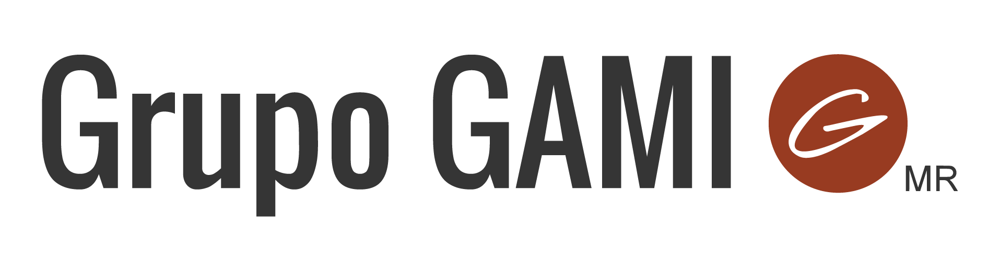
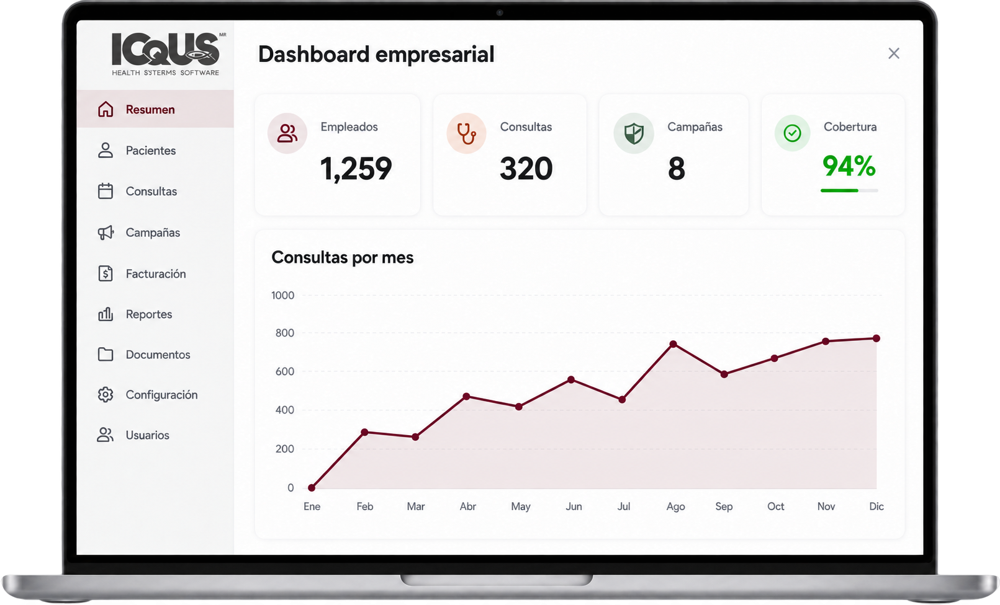

Expediente médico electrónico
Organiza la historia clínica y da continuidad a la atención.
Convierte cada atención médica en información útil para tu equipo de RH, Seguridad e Higiene y servicio médico.


Organiza la historia clínica y da continuidad a la atención.
Conecta lo que sucede en consulta con el siguiente paso.
Revisa los perfiles y permisos para cada integrante de tu equipo.
Entiende la actividad del servicio médico y las necesidades recurrentes.
Detecta patrones que ayuden a orientar las prioridades de prevención.
Acerca indicadores de salud laboral a RH y dirección.
Una visión de la empresa que respeta el contexto clínico. La vista empresarial se centra en información agregada; los expedientes individuales se mantienen separados.
ICqUS reúne la información de la atención médica y la transforma en estadísticas, indicadores y reportes. Así, el registro clínico también aporta valor a las decisiones de tu organización.
Expedientes, consultas y seguimiento en una misma plataforma.
Consulta la actividad de atención e identifica tendencias que merecen una revisión.
Acerca la información de salud laboral a RH y dirección con una visión ejecutiva.
Conoce cómo se organiza la atención médica y cómo esa información llega a la vista empresarial. Una demostración para imaginar ICqUS en tu operación.
Descubre cómo podría aplicar ICqUS en tu empresa.
Solicitar mi evaluaciónAtención y registro clínico
Seguimiento del colaborador
Indicadores y reportes
La salud laboral no termina cuando concluye una consulta. ICqUS reúne herramientas para organizar la atención y acompañar lo que sigue.
Organiza consultas y recordatorios.
Reúne recetas, estudios y documentos.
Da seguimiento a iniciativas de salud en tu empresa.
Consulta citas y resultados desde su propio acceso.
Organiza la operación desde la vista empresarial.
Revisa los permisos adecuados para cada usuario.
Cada área necesita responder preguntas diferentes. ICqUS acerca la información de salud laboral a quienes atienden, previenen y deciden.
Revisa la actividad de atención y los motivos de consulta para conversar con el servicio médico y orientar iniciativas de bienestar.
Identifica tendencias e información de incidentes y riesgos que ayuden a revisar prioridades con tu equipo de salud laboral.
Organiza expedientes, registra consultas y diagnósticos, y conserva información para dar seguimiento a los colaboradores.
Reportes ejecutivos que permiten revisar necesidades de salud laboral y conversar sobre las acciones de la empresa.
El valor aparece cuando puedes usar la información que genera tu servicio médico para revisar lo que sucede y decidir qué sigue.
Revisa los diagnósticos registrados para reconocer necesidades recurrentes.
Conoce la actividad de consultas y los horarios de mayor demanda.
Conecta la actividad clínica con reportes que ayuden a revisar prioridades.
Puedes contratar ICqUS por separado de los servicios médicos de Grupo GAMI. En la evaluación inicial revisamos las necesidades de tu empresa y cómo podría integrarse a tu operación.
La evaluación comienza con tu contexto y las necesidades de tu empresa.
Es una plataforma médica desarrollada por Grupo GAMI para organizar información clínica, registrar la atención y generar estadísticas y reportes de salud laboral.
Para responsables de Recursos Humanos, Seguridad e Higiene, servicio médico y dirección que quieren conocer cómo ICqUS puede aportar a la salud laboral de su empresa.
No es un requisito. ICqUS puede contratarse por separado. La evaluación permite conocer tu operación actual y revisar las necesidades de implementación.
El Dr. Alan Preciado conversará contigo por WhatsApp para conocer tu empresa y acordar una reunión. En ese primer contacto podrás explicar tus necesidades y resolver tus dudas sobre la plataforma.
La vista empresarial descrita para ICqUS se enfoca en reportes agregados. El expediente clínico individual se mantiene separado de esa vista. En la evaluación puedes revisar los perfiles y permisos disponibles para tu equipo.
Solicita una evaluación inicial. El Dr. Alan Preciado conversará contigo por WhatsApp para conocer tu contexto y acordar una reunión.
Cuéntanos un poco sobre tu empresa.